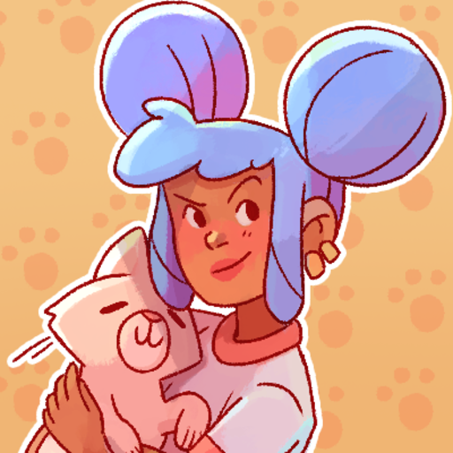
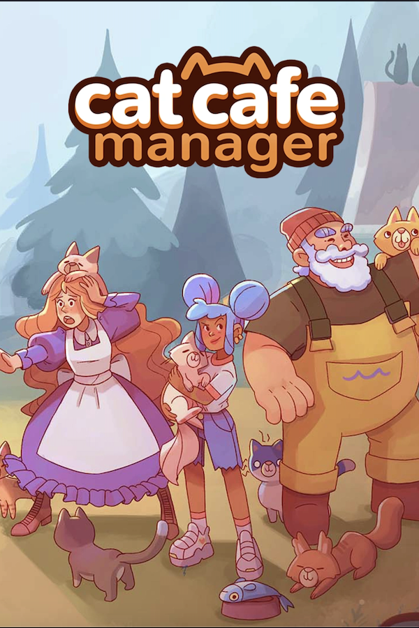

 Cat Cafe Manager
Details
|  | |
| Playtime | 16h 56m 0s |
| Last Activity | 31/03/2024 21:10:55 |
| Added | 5/06/2025 3:25:10 |
| Modified | 6/06/2025 22:22:28 |
| Completion Status | In Progress |
| Library | Steam |
| Source | Steam |
| Platform | PC (Windows) |
| Release Date | |
| Community Score | |
| Critic Score | |
| User Score | |
| Genre | Indie Simulation Strategy |
| Developer | |
| Publisher | |
| Feature | Achievements Cloud Saves Family Sharing Partial Controller Support Single-Player |
| Links | Community Hub Discussions Guides News Store Page PCGamingWiki Achievements |
| Tag | 2D Building Capitalism Cartoon Cartoony Cats Colorful Cozy Cute Drama Economy Life Sim Management Simulation Singleplayer Strategy Stylized Time Management Trading Wholesome |
Description
 The life of a Cat Cafe Manager awaits! Your grandmother left you a small cafe in the sleepy village of Caterwaul Way, and it's up to you to fix the place up, impress the locals, and befriend the local cat population. Time to roll up your sleeves, break out the tools, and start hammering away. Your cat cafe can be the talk of the town with the right attitude, menu, and of course, the right cats.
The life of a Cat Cafe Manager awaits! Your grandmother left you a small cafe in the sleepy village of Caterwaul Way, and it's up to you to fix the place up, impress the locals, and befriend the local cat population. Time to roll up your sleeves, break out the tools, and start hammering away. Your cat cafe can be the talk of the town with the right attitude, menu, and of course, the right cats.
That's right, Caterwaul Way is home to a plethora of extraordinary felines. The cafe can become their home, to the delight and relief of the villagers. Who knows, maybe their presence will loosen tongues and help you discover the secrets of Caterwaul Way... cats and take them off the streets, giving them a home.

 The cafe is run-down and abandoned by the time you arrive, but it's nothing that a little bit of elbow grease (and money) can't fix.
The cafe is run-down and abandoned by the time you arrive, but it's nothing that a little bit of elbow grease (and money) can't fix.
Renovate the cafe, then decorate and expand it as you see fit and create a welcoming place for cats - and people - to relax in!
Build up a capable staff by hiring the right people, managing their workload, and helping them refine their skills.
Refine your cafe experience further with custom dishes and other menu items, catering to your customer's needs.

 A good cafe is more than just a restaurant with good food and drinks. The difference lies in relationships. At Caterwaul Way, that means befriending cats and townsfolk alike.
A good cafe is more than just a restaurant with good food and drinks. The difference lies in relationships. At Caterwaul Way, that means befriending cats and townsfolk alike.
Befriend and build relationships with a diverse cast of local villagers, such as Finley, a young musician trying to make it big, or Bonner, the local ferryman who's got some very tall stories to tell.
Look after the local cats, befriend, and, eventually, adopt them. Each stray cat is unique and will make your cafe a little different.
Keep your human and feline friends happy to unlock clues and eventually learn the secrets of Caterwaul Way.

 Caterwaul Way has a long and mysterious history - and many festivals celebrating it. If you want your cat cafe to become a staple of the village, plan accordingly!
Caterwaul Way has a long and mysterious history - and many festivals celebrating it. If you want your cat cafe to become a staple of the village, plan accordingly!
Travel the town, interact with the locals, and discover new recipes and opportunities for your cafe.
And, if all goes well, maybe you'll crack the mystery of the crumbling, ancient shrine to an old feline god in the forests near Caterwaul Way...